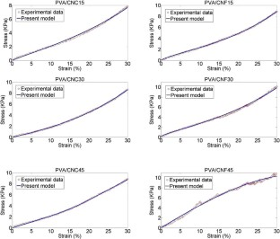

01 · Active matter
Microrobotic swarms
Collective transport and emergent organization of microscale robotic agents in Newtonian, non-Newtonian and viscoelastic environments.




R. Pramanik
The European Physical Journal E
DOIR. Pramanik
Open Transport
DOIR. Pramanik
Next Materials
DOIP. Narayanan, R. Pramanik, A. Arockiarajan
Advanced Engineering Materials
DOIV.K. Gopalakrishnan, R. Pramanik, A. Arockiarajan
Materials & Design 258, 114572
DOIR. Pramanik, M. Park, Z. Ren, M. Sitti, R. Verstappen, P.R. Onck
Extreme Mechanics Letters 78, 102358
DOIR. Pramanik, R.W.C.P. Verstappen, P.R. Onck
Nonlinear Dynamics
DOIJ.M. Chandra Hasa, P. Narayanan, R. Pramanik, A. Arockiarajan
Biomedical Materials
DOIR. Pramanik, R.W.C.P. Verstappen, P.R. Onck
Physics of Fluids 36(10), 101302
DOIR. Pramanik, R.W.C.P. Verstappen, P.R. Onck
Applied Physics Reviews 11(2), 021312
DOIP. Narayanan, R. Pramanik, A. Arockiarajan
Smart Materials and Structures 33, 043001
DOIP. Narayanan, R. Pramanik, A. Arockiarajan
Mechanics of Materials 184, 104722
DOIP. Narayanan, R. Pramanik, A. Arockiarajan
European Journal of Mechanics A/Solids 98, 104874
DOIR. Pramanik, R. Verstappen, P.R. Onck
Physical Review E 107(1), 014607
DOIR. Pramanik, F. Soni, K. Shanmuganathan, A. Arockiarajan
Mechanics of Time-Dependent Materials 26, 257–270, 2022
DOIR. Pramanik, A. Arockiarajan
Materials Letters 314, 131871, 2022
DOIR. Pramanik, P.R. Onck, R.W.C.P. Verstappen
Advances in Robotics, ACM-TRS 2021
DOIF. Ram, P. Kaviraj, R. Pramanik, A. Krishnan, K. Shanmuganathan, A. Arockiarajan
Journal of Alloys and Compounds 823, 153701, 2020
DOIR. Pramanik, A. Narayanan, A. Rajan, S. Konar, A. Arockiarajan
International Journal of Engineering Science 144, 103144, 2019
DOIR. Pramanik, A. Arockiarajan
Smart Materials and Structures 28(10), 103001, 2019
DOIR. Pramanik, L. Santhosh, A. Arockiarajan
Meccanica 54, 1611–1622, 2019
DOIA. Narayanan, A. Rajan, R. Pramanik, A. Arockiarajan
Materials Research Express 6(8), 085418, 2019
DOIA. Rajan, A. Narayanan, R. Pramanik, A. Arockiarajan
Materials Research Express 6(5), 055320, 2019
DOIR. Pramanik, A. Arockiarajan
Journal of the Mechanical Behavior of Biomedical Materials 90, 275–283, 2019
DOIR. Pramanik, B. Ganivada, F. Ram, K. Shanmuganathan, A. Arockiarajan
Materials Letters 236, 222–224, 2019
DOIP. Kaviraj, R. Pramanik, A. Arockiarajan
Ceramics International 45(9), 12344–12352, 2019
DOIR. Pramanik, M.K. Sahukar, Y. Mohan, B. Praveenkumar, S.R. Sangawar, et al.
Ceramics International 45(5), 5731–5742, 2019
DOIR. Pramanik, A. Arockiarajan
Philosophical Magazine 99(1), 1–21, 2019
DOIR. Pramanik, A. Arockiarajan
Acta Mechanica 229, 4187–4198, 2018
DOIR. Pramanik, A. Arockiarajan
Ceramics International 44(12), 13934–13943, 2018
DOIB. Sikder, R. Pramanik, A. Chanda
Materialwissenschaft und Werkstofftechnik 48, 726–730, 2017
DOI